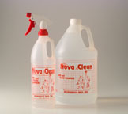
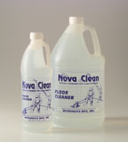
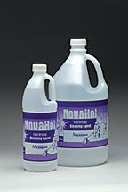

| NovaClean� Lab & Glass Clean | |
|  |
Low-ionic ready-to-use cleaner for work-stations, laminar flow benches, glass, plastic and acrylic screens, cleanroom curtains and painted surfaces. Filtered to 0.1 microns the NovaClean Lab & Glass Clean has sodium and potassium levels detectable only in parts per billion. Available in an easy-to-use quart size spray bottle the solution has a good evaporation rate and can be applied directly on the surface to be cleaned. Also available in gallon containers.
Product id: NC2-Q, NC2-G |
| NovaClean� Floor Clean | |
|  |
NovaClean Floor Clean is an all-purpose cleanroom cleaner filtered to 0.1 microns. At the recommended dilution the formula claims sodium and potassium levels detectable only in parts per billion. With no mobile ions the NovaClean will not generate a static charge and with no residue build up it will not affect the efficiency of conductive flooring. NovaClean Floor Clean is a concentrate which will yield 60-128 gallons of cleaning solution per gallon container.
|
| NovaHol� Cleanroom Cleaner | |
|  |
This ready-to-use formulation offers the same fine filtration and low ionic levels of NovaClean with the addition of Isopropyl Alcohol to speed dry time. NovaHol is available in an easy to use spray bottle and can be applied directly to the surface being cleaned. Gallon refill bottles are also available. With its extremely high evaporation rate, NovaHol is ideal for cleaning glass, acrylic, vinyl curtains and stainless steel surfaces. Product id: NH1-Q, NH1- |